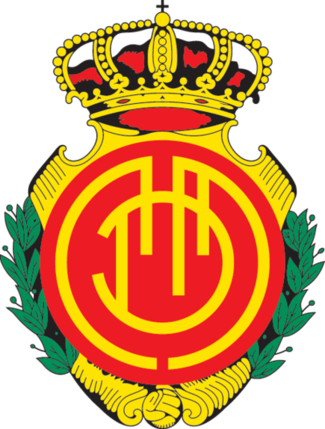
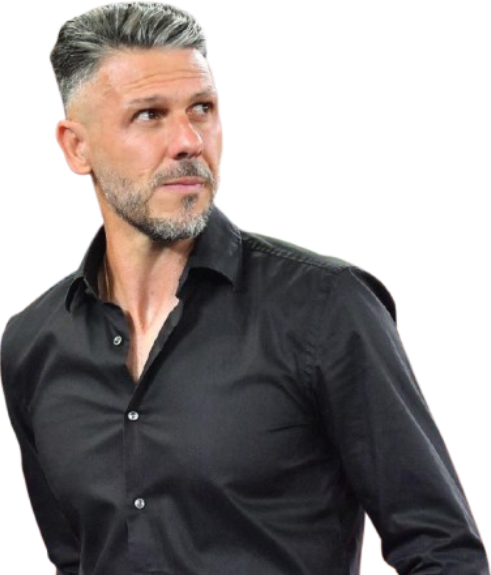
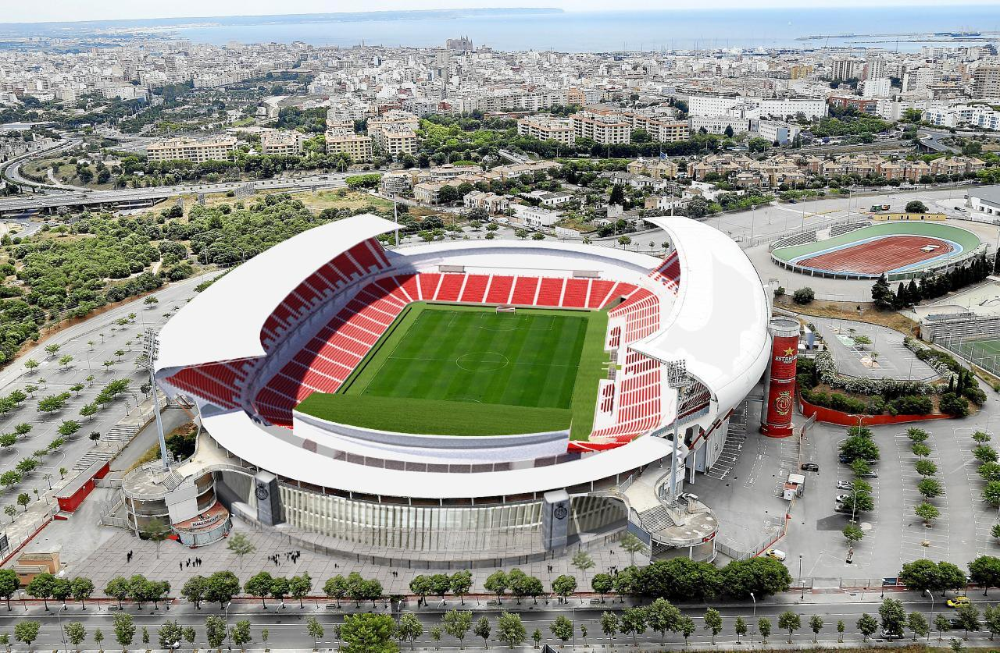

Treinador: Martín Demichelis
Martin Demichelis é um treinador argentino nascido em Justiniano Posse, reconhecido pela sua liderança, exigência e conhecimento estratégico. Destacou-se no River Plate, onde conquistou títulos importantes, antes de assumir o comando do Monterrey para prosseguir a sua carreira no futebol internacional.

Estádio: Estadi Mallorca Son Moix
O Estadi Mallorca Son Moix é um recinto desportivo espanhol localizado em Palma, conhecido pela sua atmosfera frenética, renovada e esteticamente impactante. Destacou-se pela recente eliminação da pista de atletismo para aproximar os adeptos do relvado.

Estilo de Jogo:
Martin Demichelis é um treinador argentino nascido em Justiniano Posse, reconhecido pelo seu estilo de jogo ofensivo, agressivo e focado na posse de bola.
"Tota una vida!"